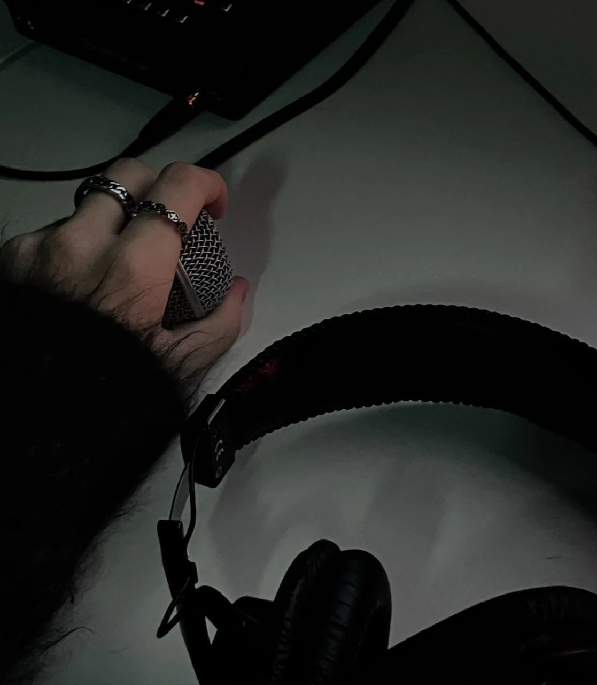
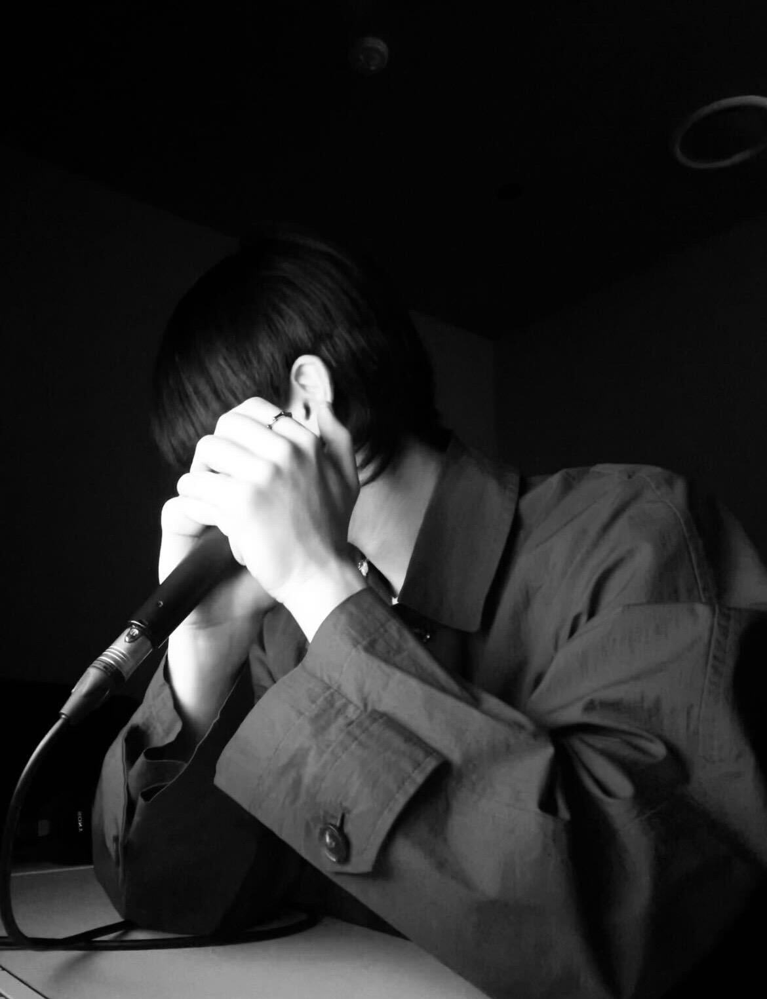
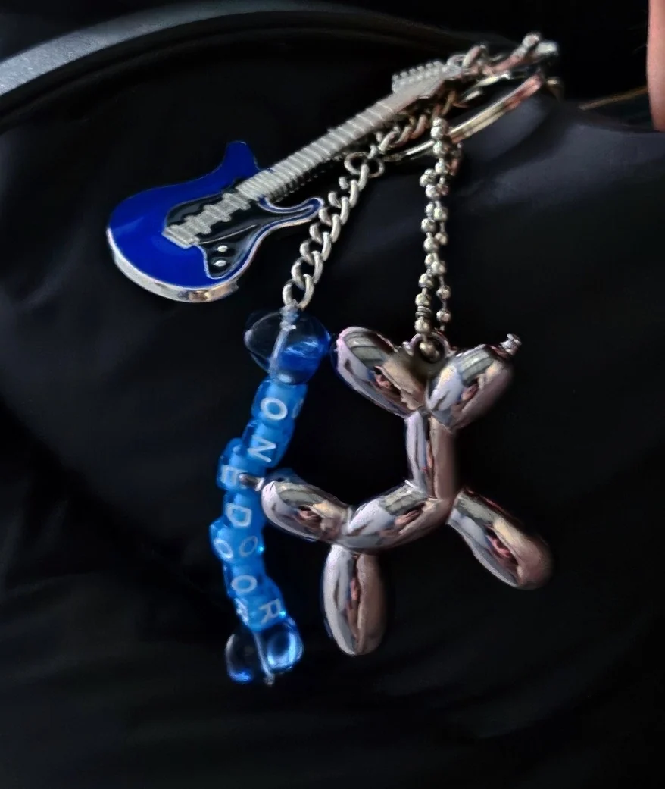
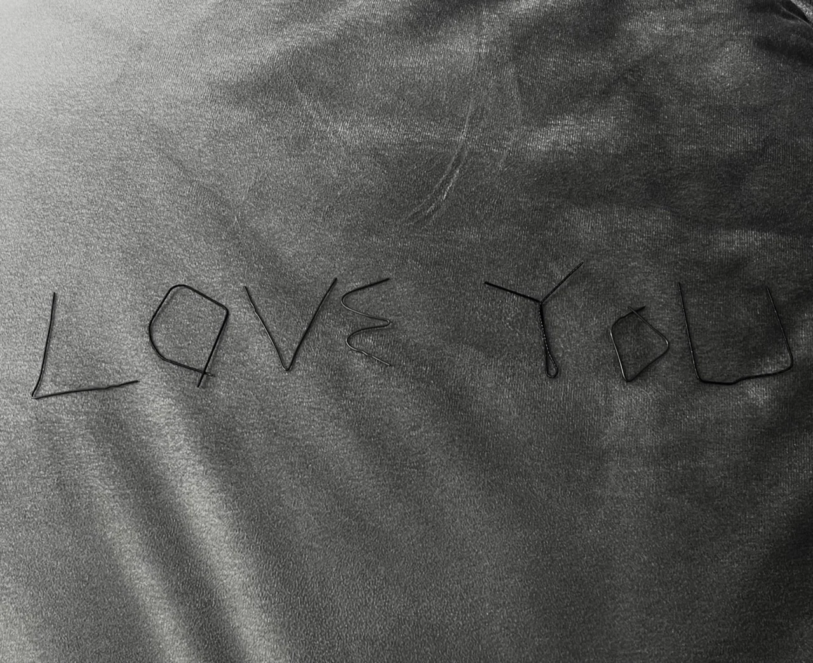
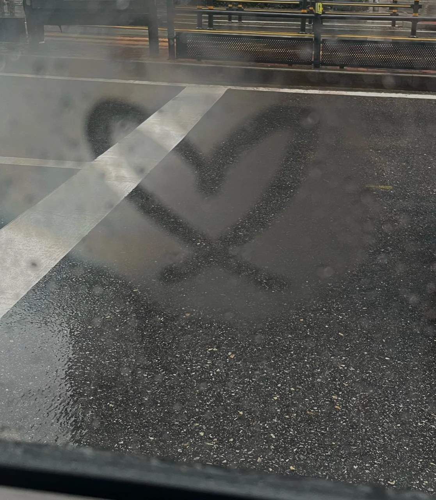
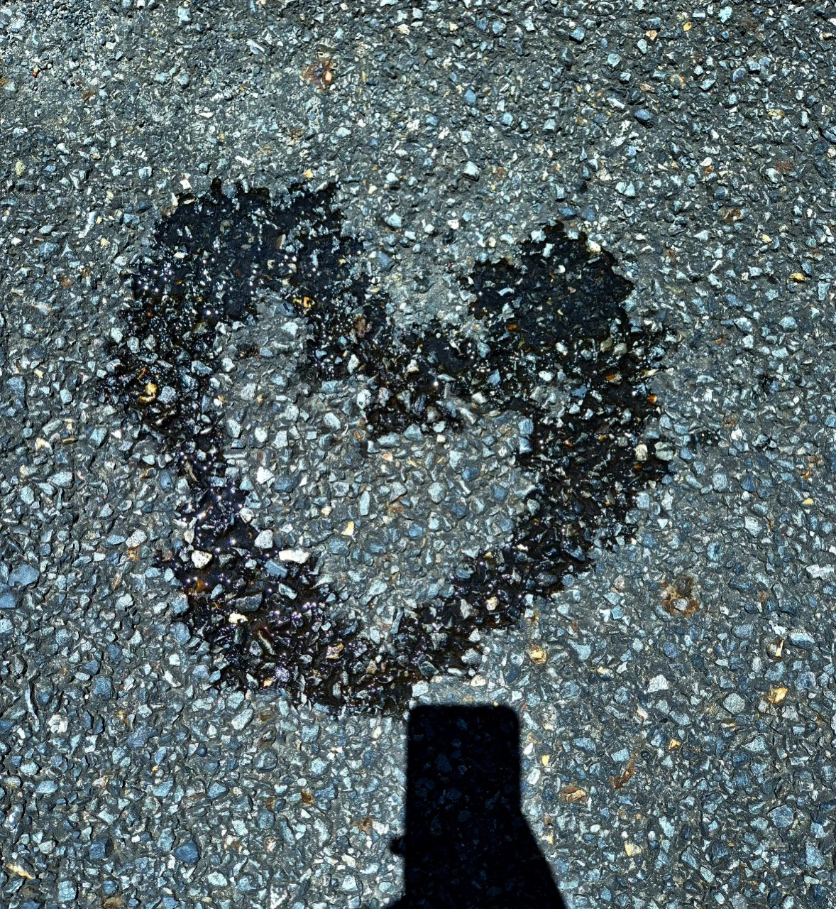
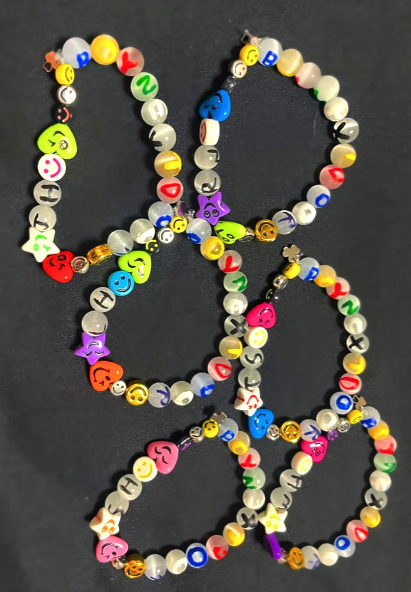
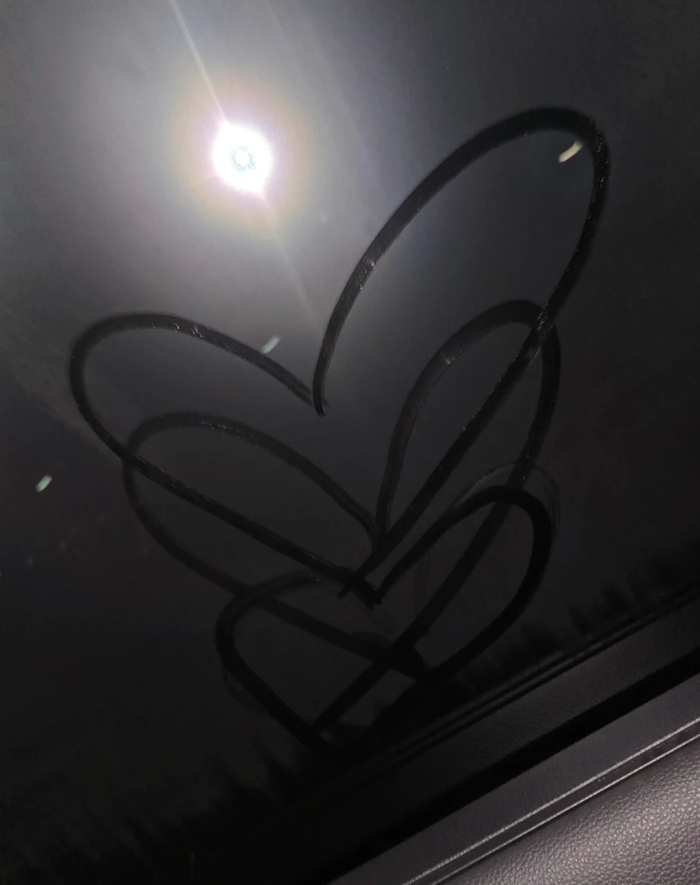

TAESAN
PERSONALARCHIVE / 001
AN ARCHIVE OF EVERYTHING HIM.
the person / the artist / the days
COLLECTING THE LITTLE THINGS
THAT MAKE HIM, HIM.





a little closer, one moment at a time.EXPLORE THE ARCHIVE
THREE SIDES
OF TAESAN.
made of moments ↗INDEX / 001–003
PERSONAL ARCHIVE
PERSONAL ARCHIVE
IN THE LITTLE THINGS.
SELECTED DETAILS / 0810

